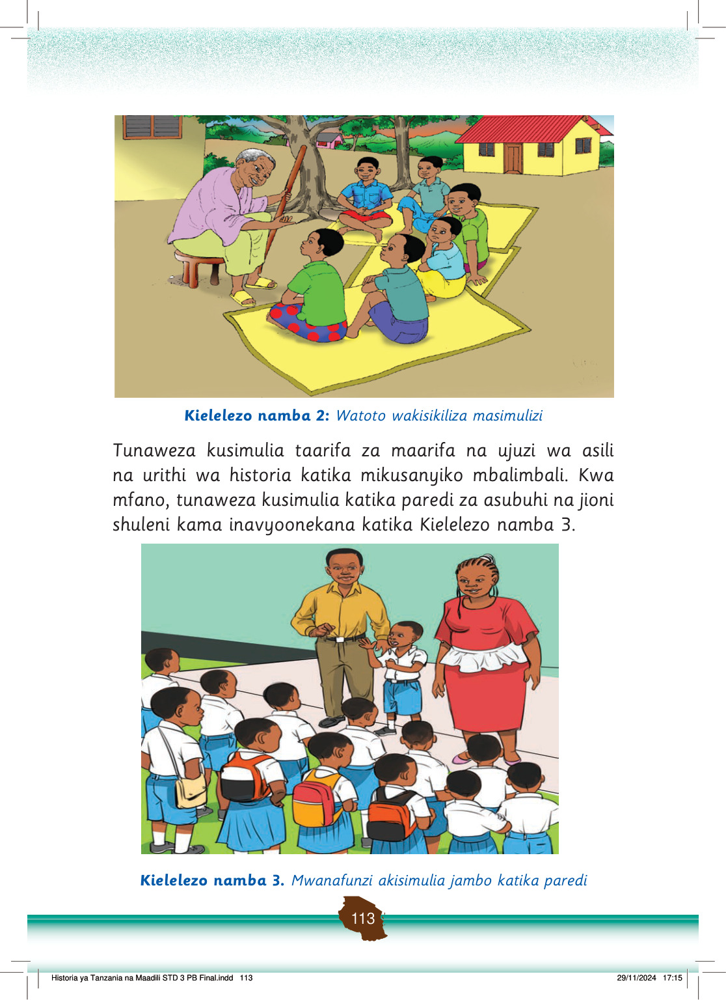

Watoto wamekaa kwenye mikeka wakimsikiliza mzee anayesimulia hadithi chini ya miti karibu na nyumba.
Kielelezo namba 2: Watoto wakisikiliza masimulizi
Tunaweza kusimulia taarifa za maarifa na ujuzi wa asili na urithi wa historia katika mikusanyiko mbalimbali.
Kwa mfano, tunaweza kusimulia katika paredi za asubuhi na jioni shuleni kama inavyoonekana katika Kielelezo namba 3.
Mwanafunzi anasimulia jambo mbele ya walimu na wanafunzi wenzake kwenye paredi ya shule.
Kielelezo namba 3. Mwanafunzi akisumulia jambo katika paredi